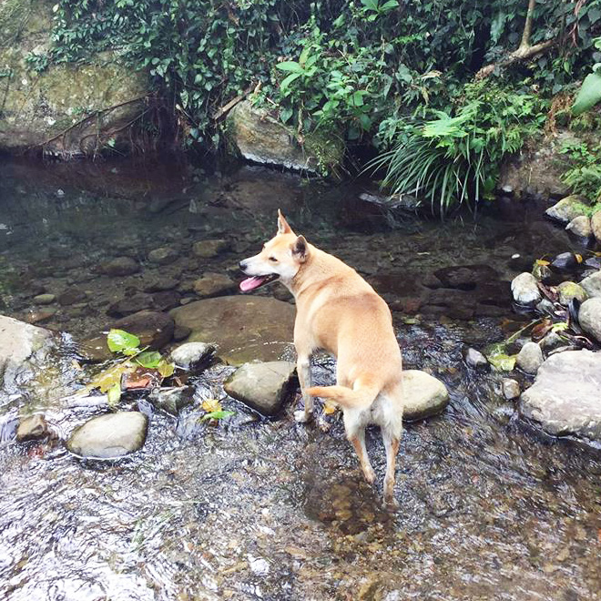
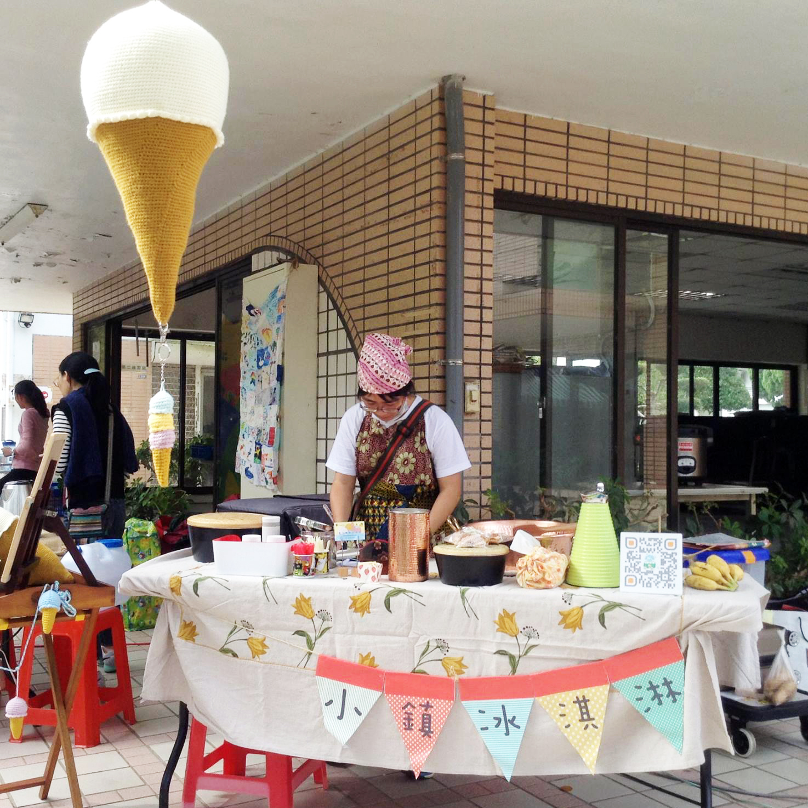
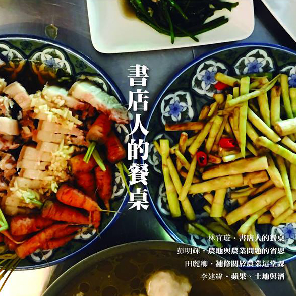
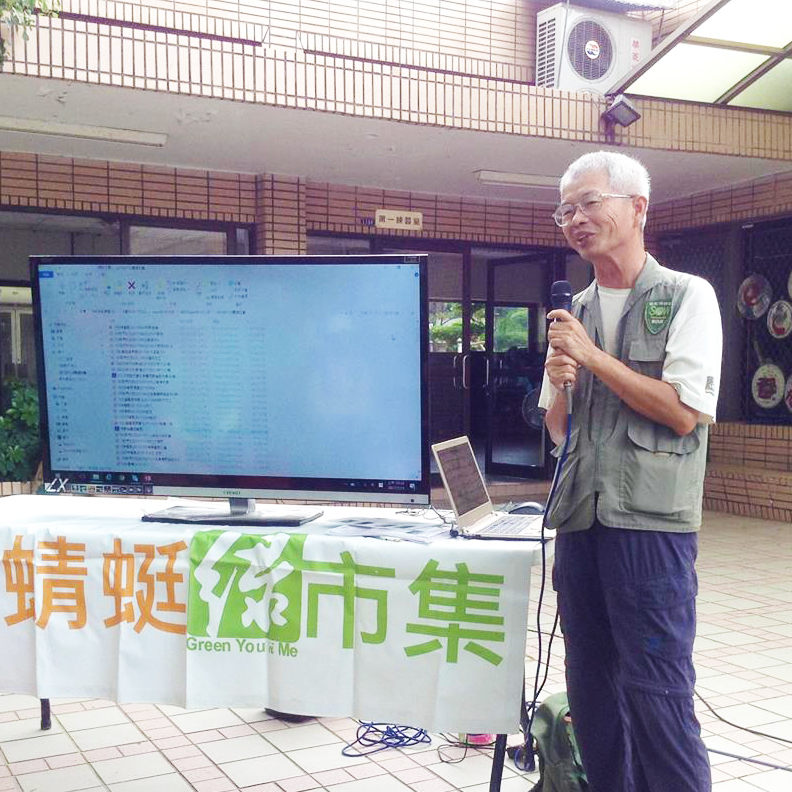
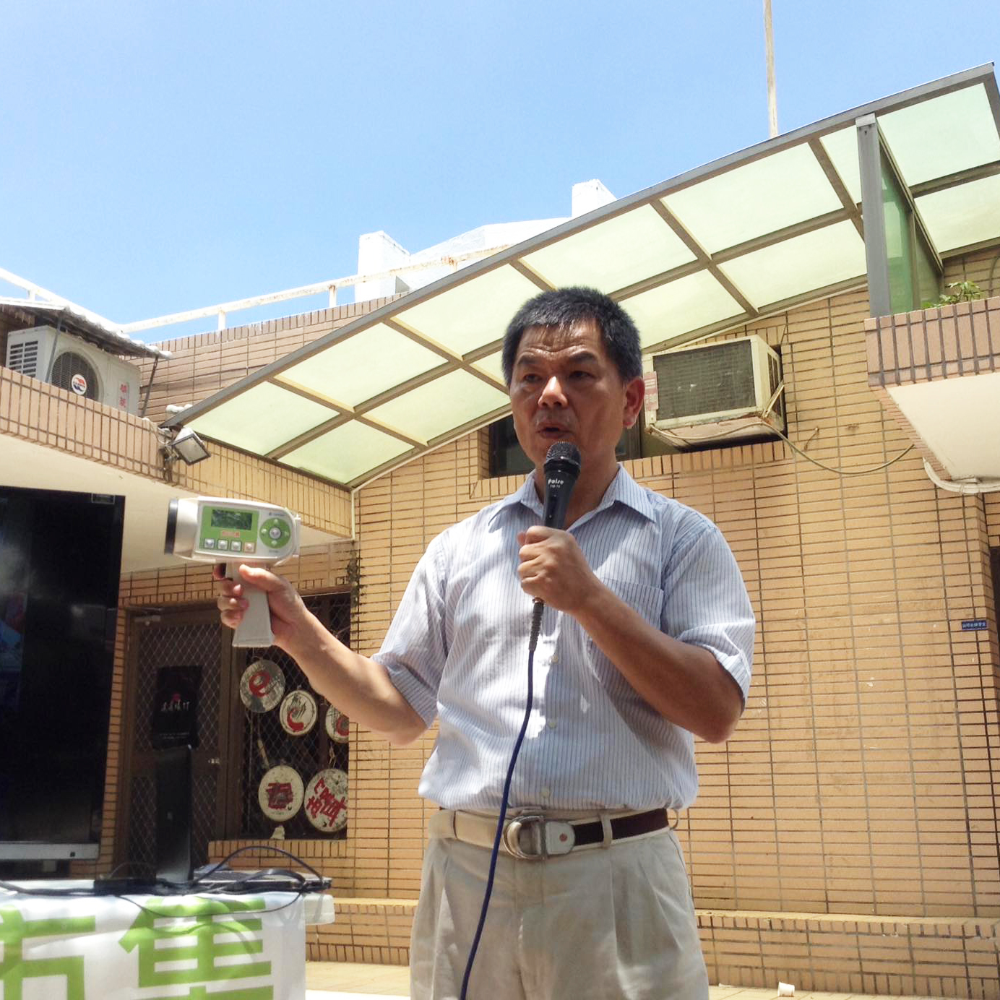

FB粉絲專頁
回首頁
市集成員
活動訊息
加入我們
交通指引
綠市集活動訊息
（2017下半年）
樹下講堂
聽故事，了解更多在地議題
DIY活動
好玩的動手做有哪些
專題報導
更進一步認識市集夥伴
樹下講堂
9/16錢佳慧、李詠晴
山與山與山間的那些事－峨眉山居青草野菜應用與親子生活書繪

9/2巫芷菁
柬埔寨客庄-南庄、雲晒綠生活

8/19侯世環
小鎮冰淇淋愛心環島之旅

8/5林宜璇
書店人的餐桌

7/15許天麟
「除草劑管理自治條例」連署說明

7/1曾光明
農業參訪與務農經驗交流
DIY活動
9/16阿金姐
番茄炒蛋教學
8/19阿金姐
梅漬番茄DIY
7/15樸食小舖
番茄味噌醬示範教學
專題報導
鬍子大叔的「有機紅棗」
榮啟有機農園專訪
^